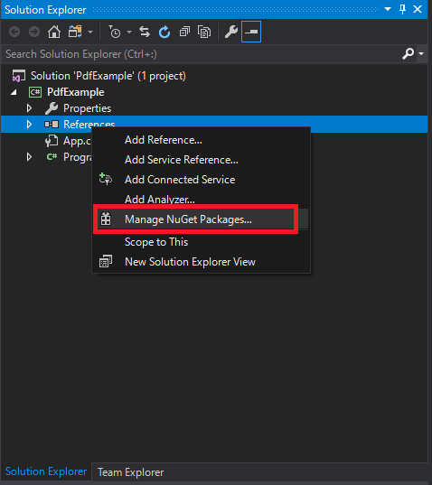
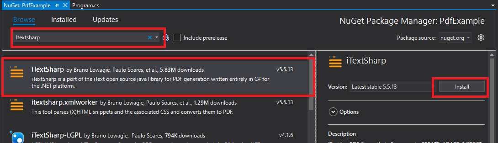
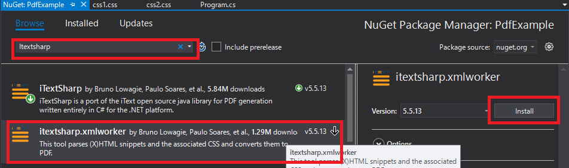
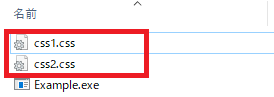
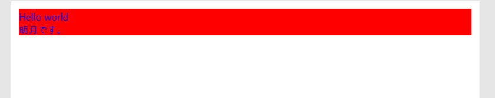

[C#] PDFを作成する方法(iTextSharp)
こんにちは。明月です。
この投稿はCでPDFを作成する方法(iTextSharp)に関する説明です。
プログラムを運用すれば結果レポートや帳票などを出力する場合が多いです。その時にCSVファイルやExcelファイル、XMLファイルタイプで出力する場合があります。
その中で契約書やデータ形式ではなくドキュメント形式、でも編集ができないタイプで出力したい場合はPDFを利用します。
C#でPDFを出力するために提供するオープンライブラリはiTextSharpがあります。iTextSharpを使うためにNugetを利用してダウンロードして連携します。



iTextSharpライブラリを連携したらソースを作成してPDFを出力しましょう。
using System;
using System.Text;
using System.IO;
using iTextSharp.text;
using iTextSharp.text.pdf;
using iTextSharp.tool.xml;
using iTextSharp.tool.xml.html;
using iTextSharp.tool.xml.pipeline.css;
using iTextSharp.tool.xml.css;
using iTextSharp.tool.xml.pipeline.html;
using iTextSharp.tool.xml.pipeline.end;
using iTextSharp.tool.xml.parser;
namespace PdfExample
{
class Program
{
// 実行関数
static void Main(string[] args)
{
// HTMLタイプのStringデータ
var html = @"
<html>
<head></head>
<body>
<div>Hello world</div>
<div>明月です。</div>
</body>
</html>
";
// ファイルIOストリームを取得する。
using (var stream = new FileStream(Environment.CurrentDirectory + "/simple.pdf", FileMode.Create, FileAccess.Write))
{
// PDFタイプのdocumentを生成する。
Document document = new Document(PageSize.A4, 10, 10, 10, 10);
// PdfWriterを取得する。
PdfWriter writer = PdfWriter.GetInstance(document, stream);
// document Openする。
document.Open();
try
{
// HTMLタイプでStringを反映するCSSファイルResolver
var cssResolver = new StyleAttrCSSResolver();
// Cssファイル設定
// ファイルが実行するディレクトリ
using (var cssStream = new FileStream(Environment.CurrentDirectory + "/css1.css", FileMode.Open, FileAccess.Read))
{
cssResolver.AddCss(XMLWorkerHelper.GetCSS(cssStream));
}
// ファイルが実行するディレクトリ
using (var cssStream = new FileStream(Environment.CurrentDirectory + "/css2.css", FileMode.Open, FileAccess.Read))
{
cssResolver.AddCss(XMLWorkerHelper.GetCSS(cssStream));
}
// フォント設定
var font = new XMLWorkerFontProvider(XMLWorkerFontProvider.DONTLOOKFORFONTS);
// Windowフォントに設定した基本フォント
font.Register(@"c:/windows/fonts/malgun.ttf", "MalgunGothic");
// フォントを反映するCssAppliersクラス
var cssAppliers = new CssAppliersImpl(font);
// htmlContext生成(フォント反映)
var htmlContext = new HtmlPipelineContext(cssAppliers);
// Htmlタグファクトリー設定
htmlContext.SetTagFactory(Tags.GetHtmlTagProcessorFactory());
// pipeline生成
var pdfPipeline = new PdfWriterPipeline(document, writer);
// html pipline生成(Html内容とpdfpipelineを合成)
var htmlPipeline = new HtmlPipeline(htmlContext, pdfPipeline);
// css pipline生成(cssとhtmlpiplineを合成)
var cssResolverPipeline = new CssResolverPipeline(cssResolver, htmlPipeline);
// Work生成pipelineを入力
var worker = new XMLWorker(cssResolverPipeline, true);
// XML parser生成(Html -> 変換)
var xmlParser = new XMLParser(true, worker, Encoding.GetEncoding("UTF-8"));
// ParserでHtmlStringを入力
using (StringReader strReader = new StringReader(html))
{
xmlParser.Parse(strReader);
}
}
finally
{
// document Close
document.Close();
}
}
Console.WriteLine("Press Any Key...");
Console.ReadKey();
}
}
}
上のHtmlからファイルを生成することまで下記の流れになります。
「FileStream -> PdfWriter取得 -> PdfWriterPipeline生成 -> HtmlPipeline生成 -> CssResolverPipeline生成 -> XMLWorker生成 -> XMLParser生成 -> XMLParserによってHtmlをPDFに変換する。」ということになります。
// ドキュメントにフォント設定
body {
font-family: MalgunGothic;
}
// divタグに背景と文字色設定
div {
background-color: red;
color: blue;
}
上のCSSファイルを実行するデバッグフォルダに置きます。

実行すると「simple.pdf」というPDFファイルが生成されます。

結果は上のとおりに出ました。
私は簡単にソースを作成しましたが、少しHTML作成する部分とCSSを紐づく部分を整理すると一般プロジェクトにも十分に使えると思います。
ここまでCでPDFを作成する方法(iTextSharp)に関する説明でした。
ご不明なところや間違いところがあればコメントしてください。
「Devlopment note / C#」の他投稿
- [C#] 非同期ソケット通信(IOCP)-APMパターン2020/05/18 18:45:37
- [C#] 非同期ソケット通信(IOCP)-EAPパターン2020/05/15 19:31:02
- [C#] NPOIを利用してExcelを読み込んで出力する方法2020/05/08 10:43:52
- [C#] NPOIライブラリを利用してエクセルファイルを生成する方法2020/05/07 01:49:01
- [C#] Geckoライブラリを利用してウェブスクレイピングする方法2020/05/05 00:52:26
- [C#] PDFを作成する方法(iTextSharp)2020/05/03 10:22:40
- [C#] シリアライズ(Serialization)をする方法2020/04/30 19:32:04
- [C#] dynamicタイプの動的パラメータ-DynamicObject(WinFormでASP.MVCのViewBagオブジェクトを使用する方法)2020/04/29 22:41:32
- [C#] Stringの補間式(interpolation)2020/04/27 20:39:57
- [C#] Newtonsoft.JSONライブラリを利用してJsonデータ構造を扱う方法2020/04/23 20:19:53
- [C#] EMailを送信する方法(System.Net.Mail)2020/04/22 19:00:42
- [C#] ini環境ファイルを使う方法2020/04/22 00:09:39
- [C#] 環境設定ファイルを扱う方法(System.Configuration)2020/04/20 19:37:57
- [C#] Reflectionを利用してクラス複製する方法2020/04/17 00:34:33
- [C#] XMLをXPathを利用してデータを取得する方法2020/04/16 00:47:17
最新投稿
- [Python] メール(smtplib)を送信する方法2020/07/27 18:38:43
- [Python] HttpConnection(requestsモジュール)でウェブサーバーで接続する方法2020/07/20 14:41:51
- [Python] Excel(openpyxl)を扱う方法2020/07/16 16:40:31
- [Python] ファイル圧縮、解凍(zipfile)する方法2020/07/14 19:14:22
- [Python] Apache cgiでPythonを使う方法2020/07/09 19:58:19
- [Python] Web serverを起動する方法(http.server)2020/07/09 00:13:13
- [Python] WebSocketを使う方法2020/07/07 17:29:18
- [Python] PythonとJavaのソケット通信する方法2020/07/03 18:35:50
- [Python] PythonとC#のソケット通信2020/07/01 19:28:22
- [Python] INI(環境設定ファイル)を扱う方法2020/06/30 18:26:01
- [Python] Jsonを扱う方法2020/06/29 19:18:15
- [Python] XMLファイルを扱う方法2020/06/26 19:18:14
- [Python] IOを利用してCSVファイルを扱う方法2020/06/25 18:20:30
- [Python] 21. データベース(mariaDB)を連結する方法2020/06/24 18:51:50
- [Python] 20. stringフォマード(Formatting)と補間法(interpolation)2020/06/23 19:03:21